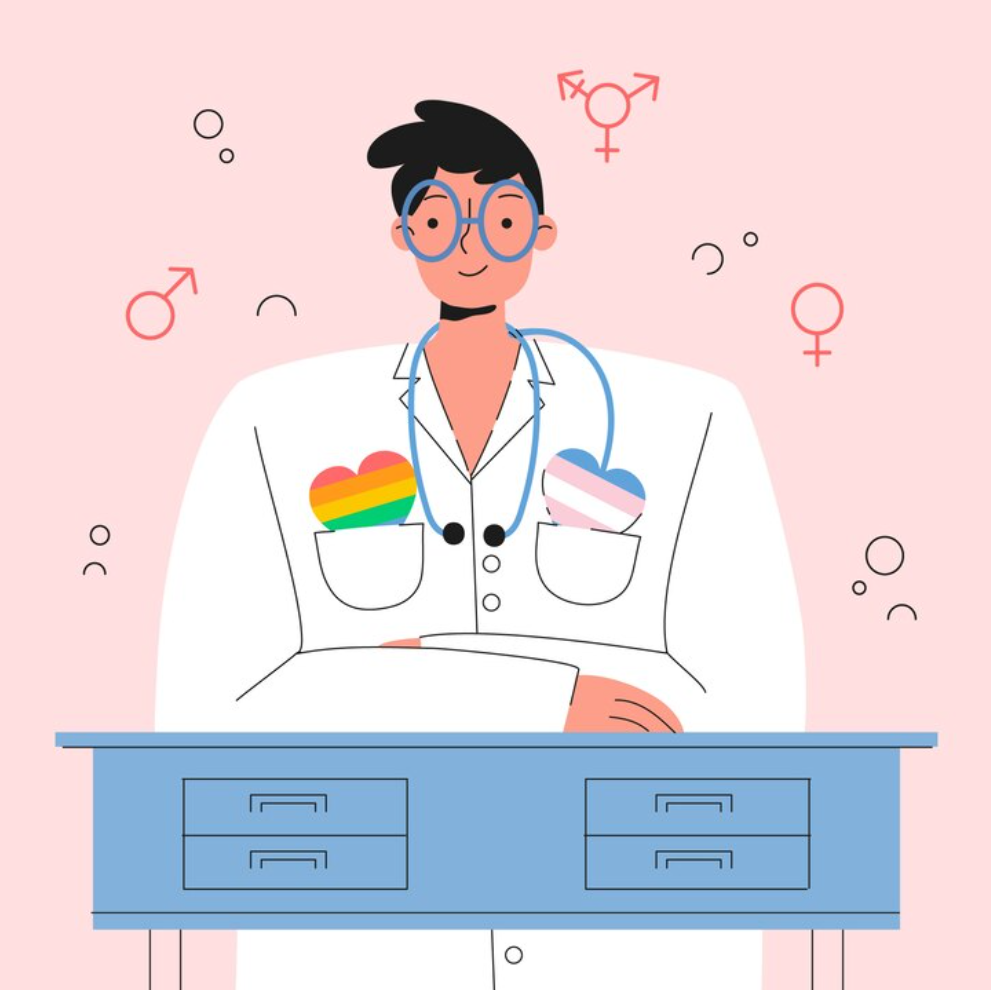

Over het onderzoek
Waarom doen we dit onderzoek?
Tijdens de puberteit en jongvolwassenheid ontwikkelen de hersenen zich nog volop. Hormonen spelen hierbij waarschijnlijk een belangrijke rol.
We weten al veel over lichamelijke effecten van puberteitsremmers en geslachtshormonen. Over de samenhang met hersenontwikkeling, cognitie en sociaal-emotioneel functioneren weten we nog minder.
Met NEUROtrans willen we beter begrijpen wat hormonen doen in de hersenen. Die kennis kan in de toekomst helpen om jongeren en hun ouders beter te informeren en de zorg beter af te stemmen.